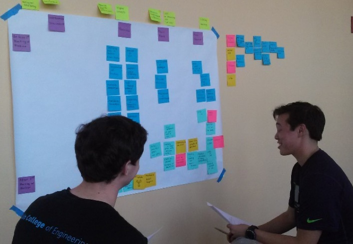

The Shop (2.0)
Liz Leadley
Start with the end in mind.
Over the course of the summer, I learned a lot about how to plan and end projects. I joined this experience with very vague expectations; I wanted to make an impact, with little definition of what that looked like or how I would get there. As the summer progressed, I slowly picked up what made a project really last.
LOL, we are so over scoped.
To start with, rather than starting projects with an idea and a direction, start with the end in mind. I can’t say I was consistent about implementing this, but the sprint plans with thought put into the form of the final deliverables made the whole sprint more fulfilling. Without, loops were left open and unaccomplished. Some of this had to do with scoping our projects; unsure how far we could get in a week, we just kept adding tasks. It generally led to the feeling of lol we are so over scoped, especially when leftover tasks were just thrown back into a pile.
So many projects, so little time.
With so many projects, so little time, we just couldn’t do everything, and not all our projects could reach a polished form. Even with time boxing to maximize efficiency, end goals had to be realistic, either accepting a minimum viable product or setting out a continuation plan for others to pick up. In addition to making single things in the moment, we aimed to make templates and plans for others to continue our work. We only somewhat realized this, struggling to uphold don’t let things shrivel and die. Several projects ended up floating toward oblivion, and our future plans aren’t entirely obvious.
Don't let things shrivel and die.
This documentation issue was something I struggled with throughout the summer. Passing on design briefs and templates for the next steps was the main solution for the question of how can we make this last, but posed several challenges. With so much to do, it was hard to make time for extra explanatory documents, much less gather photos and prototypes into a single place. Documents themselves had to be simultaneously descriptive and short enough to reasonably read through, and I discovered that TLDR is hard to do well. However, I think this was one of my major areas of growth, both in quantity and quality of my documentation.
How can we make this last?